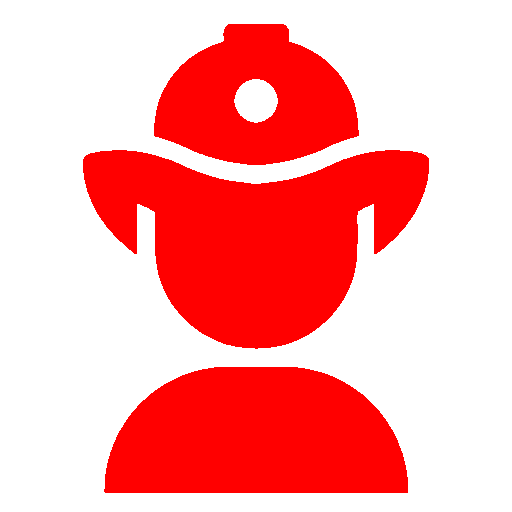

Envenenamento

O envenenamento ou intoxicação aguda ocorre quando uma pessoa inala, entra em contato direto com a pele ou ingere alguma substância tóxica. A maior parte dos casos de envenenamento ocorre dentro de casa, envolvendo crianças. O mais seguro é guardar inseticidas, remédios, produtos de limpeza e outros produtos tóxicos dentro de armários trancados.
O envenenamento pode acontecer quando a pessoa respira alguma substância tóxica, como fumaça negra, vapor de gasolina ou gás de cozinha; quando tem contato direto com produtos químicos ou encosta a pele em alguma espécie de planta venenosa; quando engole acidentalmente ou em grandes quantidades alguma substância tóxica, como alimentos deteriorados, produtos de limpeza, inseticidas ou remédios; quando é picada por insetos ou animais venenosos, como cobras, escorpiões, aranhas.
Em qualquer situação de envenenamento, coloque a vítima deitada, observe sua respiração e, se for necessário, aplique a técnica de respiração artificial (boca-a-boca); aqueça a vítima para evitar estado de choque e eleve suas pernas (se não houver suspeita de lesão na coluna). O socorro médico é indispensável.
Como suspeitar de que alguém está envenenado:
-
Vestígios de substâncias tóxicas, químicas ou naturais na boca ou na pele da vítima, indicando que ela tenha mastigado, engolido, aspirado ou entrado em contato com tais substâncias;
-
Hálito diferente;
-
Coloração dos lábios e do interior da boca alteradas;
-
Respiração fraca;
-
Temperatura baixa;
-
Dor ou queimação na boca, garganta ou estômago;
-
Confusão mental, sonolência ou mesmo inconsciência;
-
Estado de coma, alucinações e delírios;
-
Diminuição ou retenção do fluxo urinário;
-
Hemorragias (sangramentos);
-
Lesões na pele, vermelhidão ou queimaduras;
-
Enjôos, vômitos, muito suor, salivação e convulsões.
IMPORTANTE: Somente médicos e cirurgiões-dentistas devidamente habilitados podem diagnosticar doenças, indicar tratamentos e receitar remédios. As informações disponíveis em Dicas em Saúde possuem apenas caráter educativo.
Aperte aqui para ligar para os bombeiros!Primeiro Socorros relacionados...
Outros venenos são tão potentes que uma única gota sobre a pele pode provocar sintomas graves. Alguns venenos causam sintomas numa questão de segundos, ao passo que outros somente o fazem várias horas, dias ou mesmo anos depois.